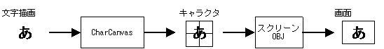
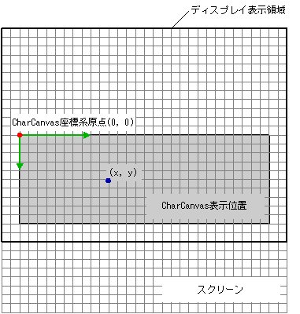

文字(列)描画ライブラリにおいて単語「キャラクタ」は常にOBJやBGの構成要素である8x8ピクセルの画像を指す語として使われます。 「文字」の意味で使われる事はありません。
文字描画ライブラリはキャラクタBGやキャラクタOBJのようなキャラクタで構成された画面表示要素に対して、
ピクセル単位で文字の描画を行うライブラリです。
文字描画ライブラリでは描画対象となるキャラクタを CharCanvas と呼ぶ仮想的な描画面に関連付け、 この仮想描画面に対して文字描画を行います。 CharCanvas の実体はキャラクタを敷き詰めて1つながりの描画面としたものです。 仮想描画面に対して文字描画を行うと文字描画ライブラリによって実体であるキャラクタに描画が行われます。
ニンテンドーDSではキャラクタに対して描画をおこなっても、
そのままでは物理画面には表示されません。
BGのキャラクタであればスクリーンの設定が、OBJのキャラクタであればOAMの設定が必要になります。
文字描画ライブラリではこれらの設定を簡易に行う関数を提供します。
またOBJのキャラクタの場合は CharCanvas からセルを構築してレンダラで描画することも可能です。

文字描画ライブラリの関数は以下のように大きく5つのグループに分ける事ができます。
|
CharCanvas構築 CharCanvasを初期化・構築する関数群です。 |
NNS_G2dCharCanvasInitForBG()NNS_G2dCharCanvasInitForOBJ1D()NNS_G2dCharCanvasInitForOBJ2DRect() |
|
セル構築 CharCanvasを表示するセルを構築する関数群です。 |
NNS_G2dCharCanvasCalcCellDataSize1D()NNS_G2dCharCanvasCalcCellDataSize2DRect()NNS_G2dCharCanvasMakeCell1D()NNS_G2dCharCanvasMakeCell2DRect() |
|
CharCanvas塗りつぶし CharCanvasを単色で塗りつぶす関数群です。 |
NNS_G2dCharCanvasClear()NNS_G2dCharCanvasClearArea() |
|
文字描画 CharCanvasに文字を描画する関数群です。 |
NNS_G2dCharCanvasDrawChar()NNS_G2dCharCanvasDrawGlyph() |
|
スクリーン・OAM設定 CharCanvas を表示できるようにスクリーン及びOAMの設定を行う関数群です。 |
NNS_G2dMapScrToCharText()NNS_G2dMapScrToCharAffine()NNS_G2dMapScrToChar256x16Pltt()NNS_G2dCalcRequireOBJ1D()NNS_G2dCalcRequireOBJ2DRect()NNS_G2dArrangeOBJ1D()NNS_G2dArrangeOBJ2DRect() |
この分類を用いると文字描画の大まかな流れは以下のようになります。
(1) CharCanvas 構築関数で CharCanvas を構築する。
スクリーン・OAM設定関数でスクリーンまたはOAMの設定を行う。
またはセル構築関数でセルを構築する
↓
(2) CharCanvas 塗りつぶし関数で CharCanvas をクリア。
↓
(3) 文字描画関数で文字描画
↓
以下(2)(3)を必要な時に必要なだけ行う。
(4) (1) でセルの構築を行った場合はレンダラを用いてセルの描画を行う
多くの場合は文字描画関数で直接文字描画を行うのではなく、 (3)の代わりに 文字列描画ライブラリ を用いた方が良いでしょう。
文字描画関数では文字描画位置の基準座標を CharCanvas
の左上隅を原点とし右下方向を正方向とするピクセル単位の座標系で表現しています。
これを本リファレンス内では CharCanvas 座標系と呼んでいます。

2005/07/12 セル構築関数の追加
2005/05/25 初版